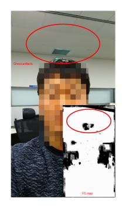
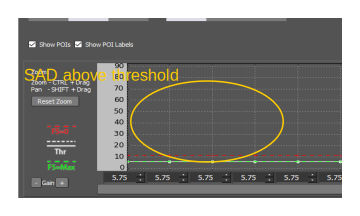

| Spectra 2xx ISP Tuning / IPE tuning | |
Motion compensated temporal filter (MCTF) futher reduces noise in images.
ANR, TF, and MCTF are used to reduce noise in tuning. Base Functions and Blending Factor settings are the main tuning factors for MCTF.
Tune TF conservatively to avoid ghost artifacts as they are more visible in Video and Preview modes than in Snapshot mode.

High thresholds in Base Functions estimate if objects are
stationary. This can cause ghost artifacts. The thresholds must be set lower than the
SAD of moving objects.

If the SAD is above upper thresholds, the object is marked as moving. If the SAD is below lower thresholds, the object is marked as stationary. To see if an object is moving, compare previous frames with the current frame and compare the input and final images. If the final image is blurrier than the original input, it may be a ghost artifact.